정밀도로지도 기반 맵 · 도로망 · 교량 및 터널 환경 (Maps, Roads & Tunnels)
기본 탑재된 국내 17개 실증 권역과 외부 국토지리정보원(NGII) 정밀도로지도(.shp) 호환 규격, OpenDRIVE 1.6 도로망 생성 원리, 교차로·노면표시 및 고가교량·옹벽·지하차도·터널 구현 방식을 설명합니다.
1. 기본 내장 17개 국내 권역
상단 툴바의 구역 메뉴에서 바로 선택할 수 있는 17개 국내 실증 권역 목록입니다. 사용자가 지도에서 출발점(S)과 목적지(G)를 지정하면 경로 주변 반경(기본 65 m)에 포함되는 병렬 차로, 반대편 대향 차로, 교차로 내부 연결 링크를 묶어 ASAM OpenDRIVE 1.6 도로망과 3D 환경을 생성합니다.
| # | 권역 선택 키 | 지역 명칭 | 도로 구성 및 주요 시험 용도 |
|---|---|---|---|
| 01 | KIAPI | 대구 달성 주행시험장 | 고속주회로, 다차선 도심시험로, 특수 내구 노면 (전용 3D 맵 지원) |
| 02 | SEC06_대구주행시험장 | 주행시험장 외곽 연계도로 | 시험장 진·출입 연결로 및 인접 교차로 |
| 03 | SEC05_달성2차산업단지 | 대구 달성2차산업단지 | 화물차 혼재 산업단지 격자형 도로망 |
| 04 | SEC04_국가산업단지 | 대구 국가산업단지 | 광폭 간선도로 및 물류 진출입 교차로 |
| 05 | SEC03_과학남북로 | 대구 과학남북로 | 중·고속 직선 간선도로 및 연동 신호교차로 |
| 06 | SEC02_테크노폴리스 | 대구 테크노폴리스 | 신호교차로 20개소, 어린이보호구역, 노변 인프라 기지국 실증 구간 |
| 07 | Yugok-ri | 대구 달성 유곡리 | 교외 연결로 및 비신호 교차로 일시정지 시험 구간 |
| 08 | SEC01_테크노폴리스로 | 대구 테크노폴리스로 | 80 km/h 연속류 자동차전용도로, 입체 램프·지하차도·터널 구간 |
| 09 | SEC001_설화명곡역_수목원입구 | 설화명곡역 ~ 수목원입구 | 역세권 다차선 간선도로 |
| 10 | SEC301_헐티로 | 대구 달성 헐티로 | 종단 경사 및 연속 곡선 산악·외곽 도로 ODD 시험 |
| 11 | SEC02_앞산터널로종점_수성의료지구 | 앞산터널로 ~ 수성의료지구 | 터널 진출입부 및 간선 합·분류 구간 |
| 12 | SEC01_수성의료지구내부도로 | 대구 수성알파시티 | 회전교차로 및 도심 블록 도로망 |
| 13 | SEC001_대구자율주행 | 대구 자율주행 시범운행지구 | 광역 도심 연속 주행 노선 |
| 14 | SEC001_대구동성로시범운행지구 | 대구 반월당·동성로 일대 | 고밀도 상업지구 다차선 간선도로 및 대중교통 혼재 구간 |
| 15 | Pangyo Zero-city | 성남 판교 제로시티 | 수도권 도심·업무지구 실증 도로망 |
| 16 | Pangyo Test-bed / Test-bed-2 | 성남 판교 테스트베드 1·2 | 복합 교차로 및 보행자 횡단 밀집 구간 |
| 17 | songdo_convensia | 인천 송도 컨벤시아 일대 | 광폭 대로 및 대형 사거리 구간 |
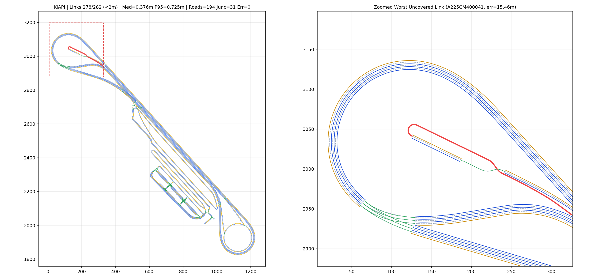
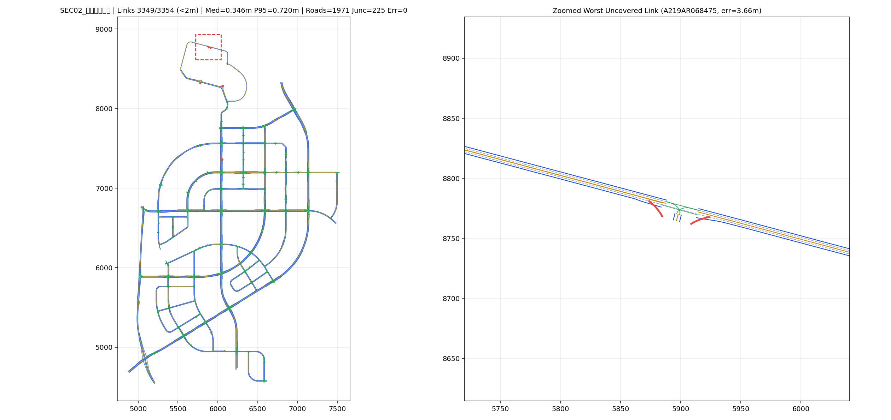
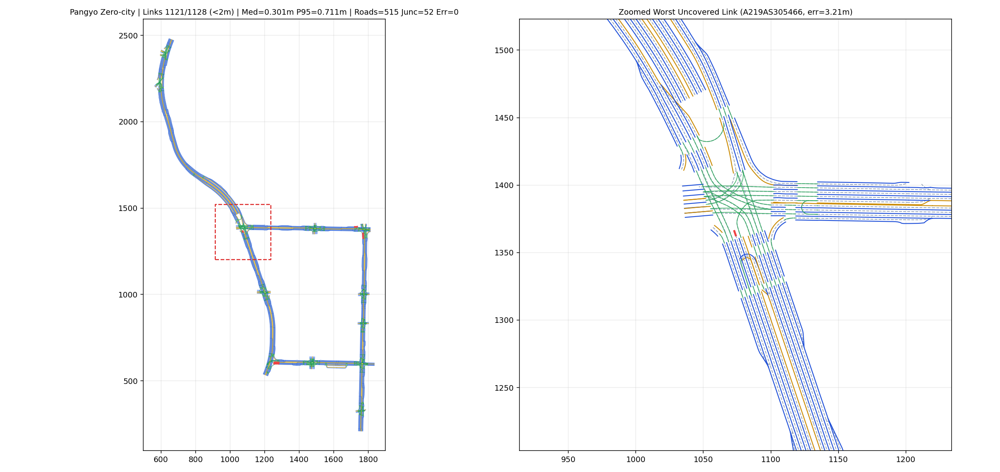
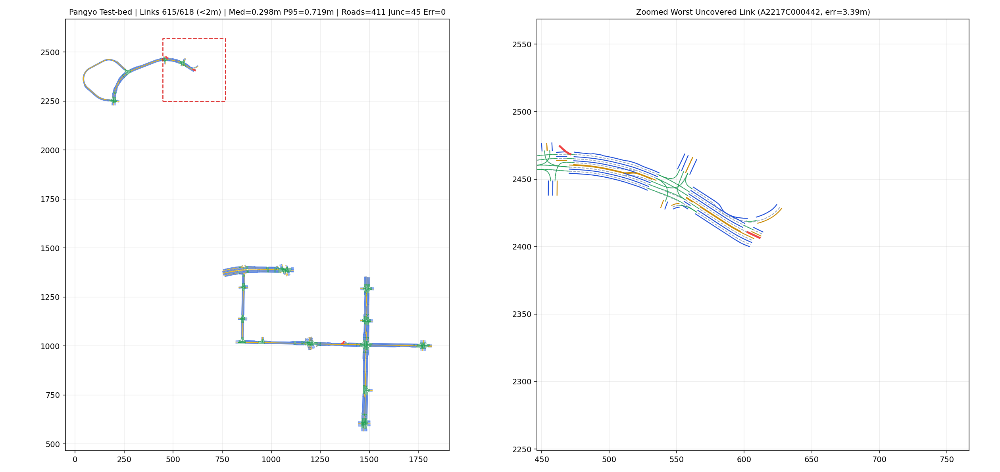
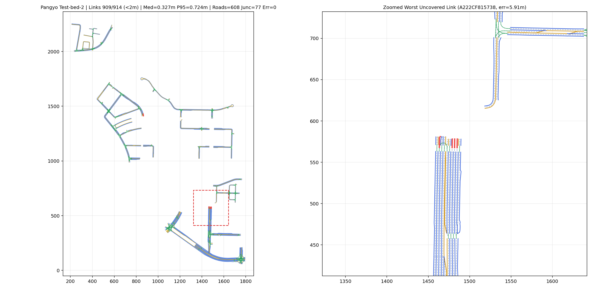
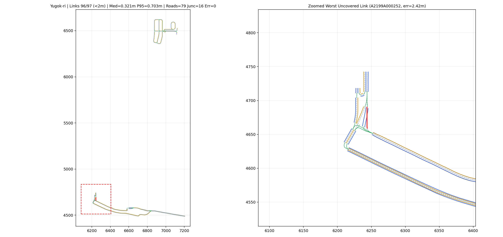
2. 외부 정밀도로지도(.shp) 불러오기 호환 규격
[폴더] 버튼을 통해 외부 지역의 국토지리정보원 정밀도로지도 폴더를 직접 로드할 수 있으며, 구형(A1~C6)과 2024년 신형(NT/RM/SF) 레이어 명칭 및 CP949/UTF-8 속성 인코딩을 자동으로 인식합니다.
| 구형 표준 레이어 (A1~C6) | 2024 신형 표준 레이어 (NT/RM/SF) | 공간 도형 | 시뮬레이션 변환 대상 |
|---|---|---|---|
A1_NODE | NT_TRAFFIC_NODE | PointZ | 교차로 접속 노드 및 도엽 경계 연결점 |
A2_LINK | NT_TRAFFIC_LINK | LineStringZ | 주행 차로 중심선, 제한속도, 좌·우 인접 링크, 교량·터널·지하차도 속성 |
B2_SURFACELINEMARK | RM_LANE | LineStringZ | 황색 중앙선, 백색 실선·점선 차선, 청색 버스전용차선, 정지선 |
B3_SURFACEMARK | RM_SURFACEMARK | PolygonZ | 일반·대각선·고원식 횡단보도 및 차로별 진행 방향 화살표 |
A3_DRIVEWAYSECTION / C3_* | SF_ROADBOUNDARY / SF_MEDIANSTRIP | Line / Polygon | 도로 외곽 경계 및 중앙분리대 |
C1_TRAFFICLIGHT | SF_TRAFFICLIGHT | PointZ | 차량용 4구 수평 신호등 및 보행자 신호등 위치 |
B1_SAFETYSIGN | SF_SAFETYSIGN | PointZ | 제한속도·주의·규제 안전표지 및 어린이보호구역 표지 |
C4_SPEEDBUMP | — (노면시설) | PolygonZ | 과속방지턱 물리 형상 |
C6_POSTPOINT | SF_POSTPOINT | PointZ | 가로등 지주(Type=3) 위치 |
3. 도로 · 교차로 · 노면표시 및 전역 표고 처리 방식
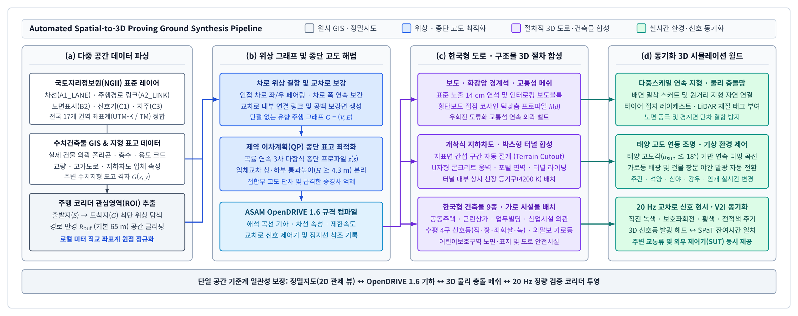
minz E(z) = ∑ wi(zi − zraw,i)2 + λtie ∑ (zi − zj)2 + λsmooth ∑ (zi+1 − 2zi + zi−1)2
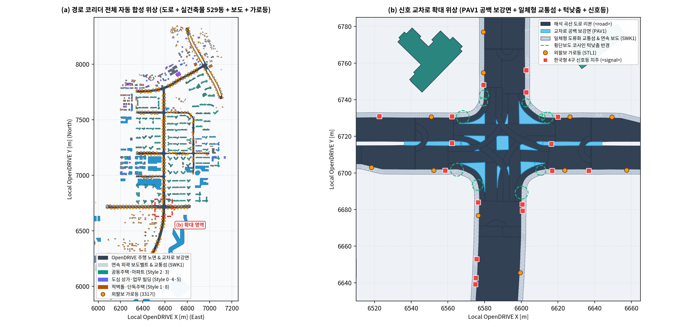
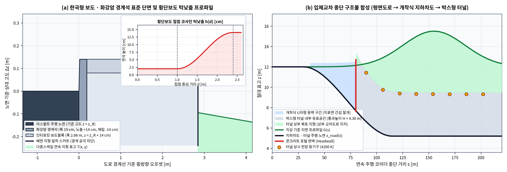
- 국소 원점 정렬 (Local Origin Shift): UTM 좌표의 큰 수치로 인해 3D 엔진(32-bit float)에서 발생하는 정점 떨림 현상을 막기 위해 회랑 중심을 국소 원점
(0, 0)부근으로 평행 이동하고 오프셋을 OpenDRIVE 헤더에 기록합니다. - 교차로 포장 보완 및 +2.2 cm 노면표시: 다지 교차로 내부 좌·우회전 차로 사이의 빈 삼각형 영역을 아스팔트 메쉬로 메워 주행 중 불필요한 타이어 낙하 충격을 없애고, 차선·정지선·화살표·횡단보도를 노면 위
+2.2 cm에 생성하여 카메라 영상 내 깜빡임(Z-fighting)을 줄였습니다(보도 연석 및 노변 시설물 사양은 신호등·표지판·가로등 문서 참조). - 도로 유형별 지하차도 · 박스 터널 · NATM 아치 터널 자동 분기: 도심 지하차도(
RoadType == '4') 및 상부 도심 도로와 중첩되는 입체 구간은 매립 깊이에 따라 개착식 U자형 옹벽(0.22 ~ 4.55 m) 또는 밀폐형 사각 박스 터널(4.55 m이상)로 생성하며, 상부 도로가 중첩되지 않는 고속도로·산악 터널(RoadType == '2')은 아래 4절의 한국형 NATM 말굽형 아치 터널 구조로 자동 분기합니다.
4. 한국형 NATM 말굽형 아치 터널 · 도심 지하차도 · PSC 교량 입체 구조물
고속도로·산악 구간(SEC01_테크노폴리스로, SEC02_앞산터널로종점_수성의료지구 등)의 장대 터널과 입체 교량·성토 옹벽을 정밀도로지도 링크 속성(RoadType 2 · 3 · 4 · 5) 및 수치표고모델로부터 자동 합성합니다.
| 입체 구조 유형 | 자동 판별 조건 | 3D 단면 · 갱구 · 내부 설비 구성 | 지형 정합 및 통과 한계 검증 |
|---|---|---|---|
| 고속도로·산악 NATM 말굽형 아치 터널 | RoadType == '2'(상부 도심 도로 미중첩) | 16분할 말굽형 아치(하부 3.05 m 백색 세라믹 타일 + 상부 NATM 콘크리트 라이닝), 좌·우 점검로·방호연석·안전난간, 2열 연속 천장 LED(갱구 4.5 m / 내부 11 m), 천장 제트팬(90 m 간격), 갱구 상단 차로제어 표지함(LCS), 대나무형 경사 콘크리트 갱구 링 | 19분할 코사인 수밀 산지 잔디 후드 및 후면 배플로 갱구 하늘 틈새 방지 · 내부 아치 천정 지형 처짐 0건(최소 여유고 +0.99 m) |
| 도심 사각 박스형 지하차도 · 개착식 램프 | RoadType == '4'또는 상부 도심 도로 중첩 | 매립 깊이 0.22 ~ 4.55 m 개착식 U자형 옹벽 및 4.55 m 이상 밀폐 사각 박스 터널, 16 m 간격 상시 점등 천장 LED 조명 | 상부 평면도로 표고 보존 및 대형 버스·화물차 통과 한계 높이(4.30 m 이상) 확보 |
| PSC 박스거더 교량 · 고가교 · 성토 옹벽 | RoadType == '3·5' (over)및 외측 단차 ≥ 1.50 m | PSC 박스거더 상판·하면 소피트, 좌·우 콘크리트 Jersey 방호벽, 하부 차로 회피 팔각 교각·코핑 보·3D 교대, 고성토 구간 수직 콘크리트 옹벽 및 도로 정렬 평활 잔디 에이프런 | 교량 하부 교차도로 지형 자동 절개(통과 여유고 5.35 m+) 및 직교 지형 격자 톱니(Sawtooth) 돌출 제거 |
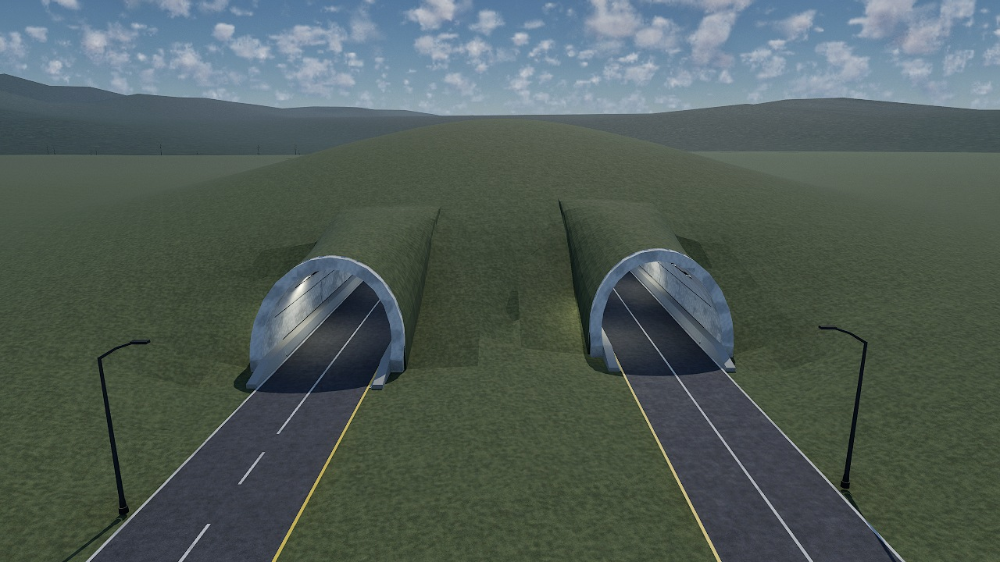

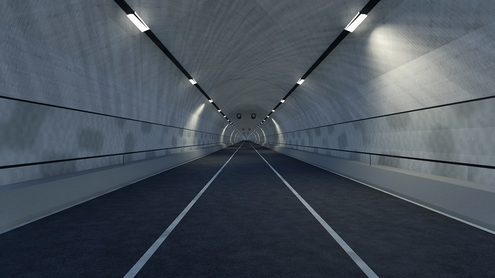
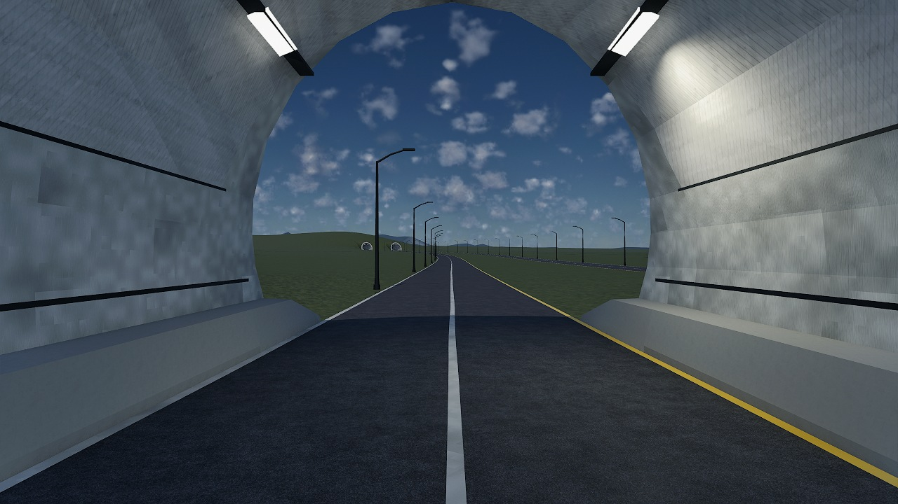
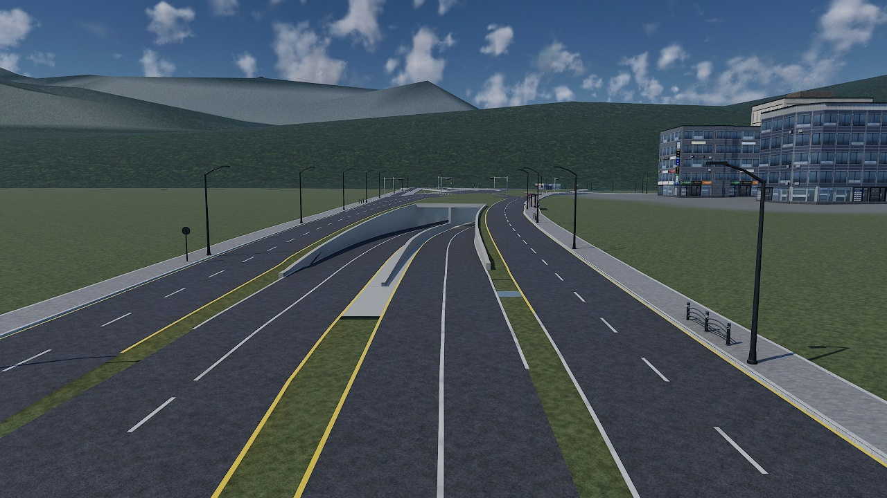
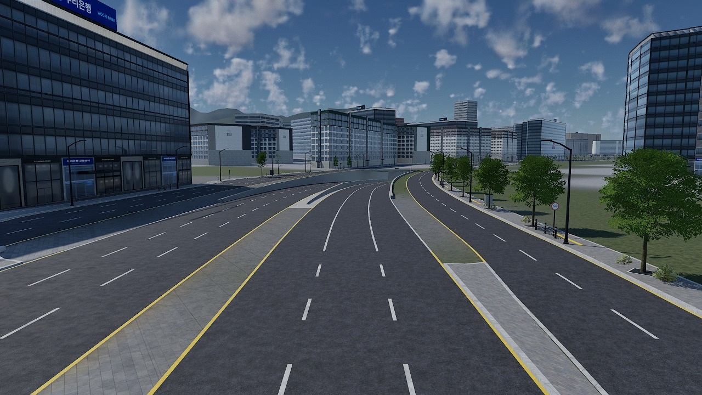
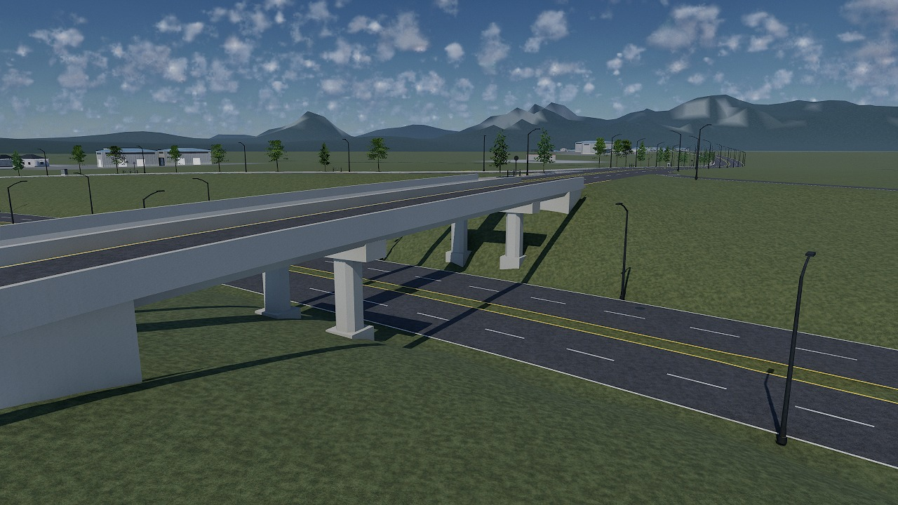
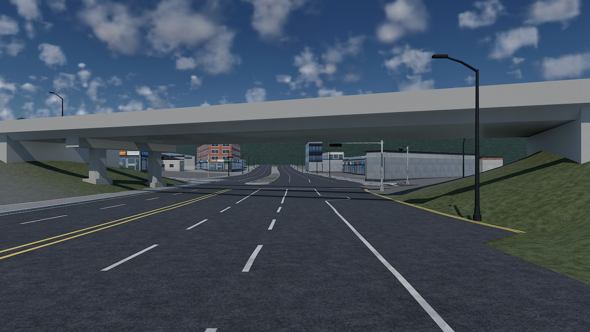
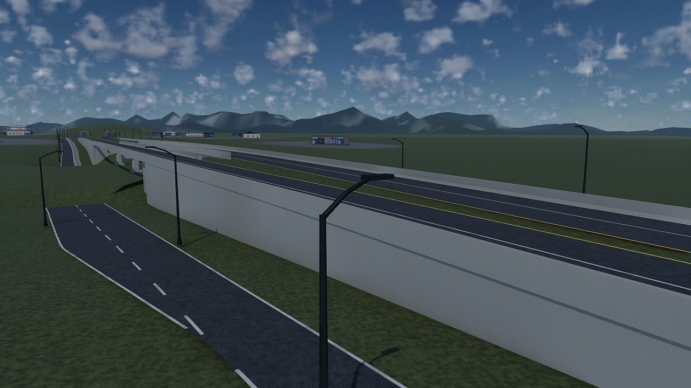